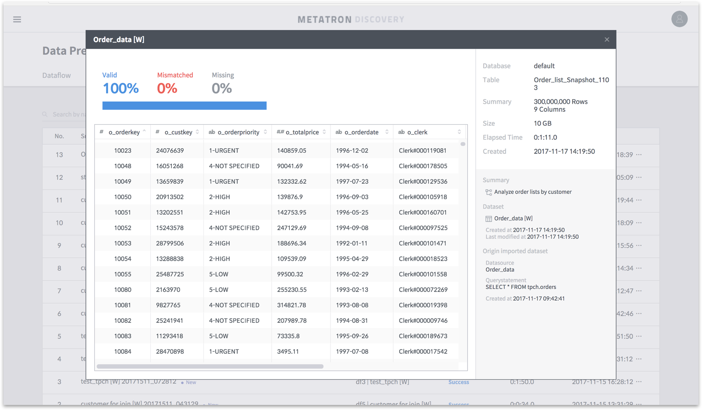
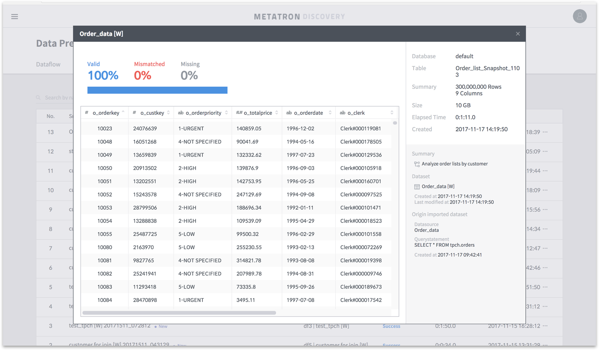

Components of Metatron Discovery¶
Metatron Discovery performs analytics on its ingested data sources or other external data sources using various analytical tools and outputs analytical results in charts and reports. To utilize this system, you must understand its overall structure shown below:

Data Preparation¶
Data Preparation refines data from source data to be ingested into Metatron. See Data Preparation for details on data preparation.
 

Data Storage¶
Data Storage manages data ingested into the Metatron engine for analysis and visualization. See Data Management for details on data management.


Data analysis and visualization¶
Each module below allows users to perform visualization-based exploration and analysis of stored data.
Workspace¶
Workspace provides an interface to manage its workbooks, workbenches, and notebooks used in an organization according to user access. See Workspace for details on the use of the workspace.

Workbook, dashboard, chart¶
Workbook supports working on, sharing, and making a presentation with dashboards and charts using a PowerPoint-like interface. See Workbook for details on the workbook module.


Data Monitoring¶
This function monitors data use based on data query statistics and query logs. See Data Monitoring for details on the data monitoring functionality.

User permission and account management¶
You can add/delete users or manage user permission.